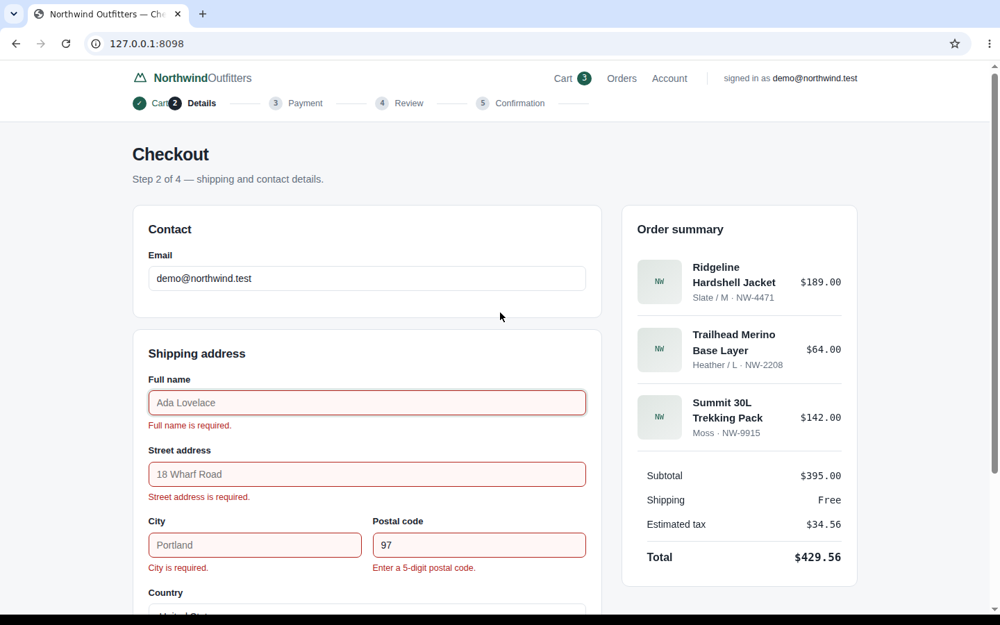
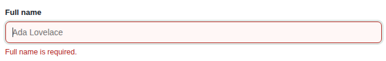
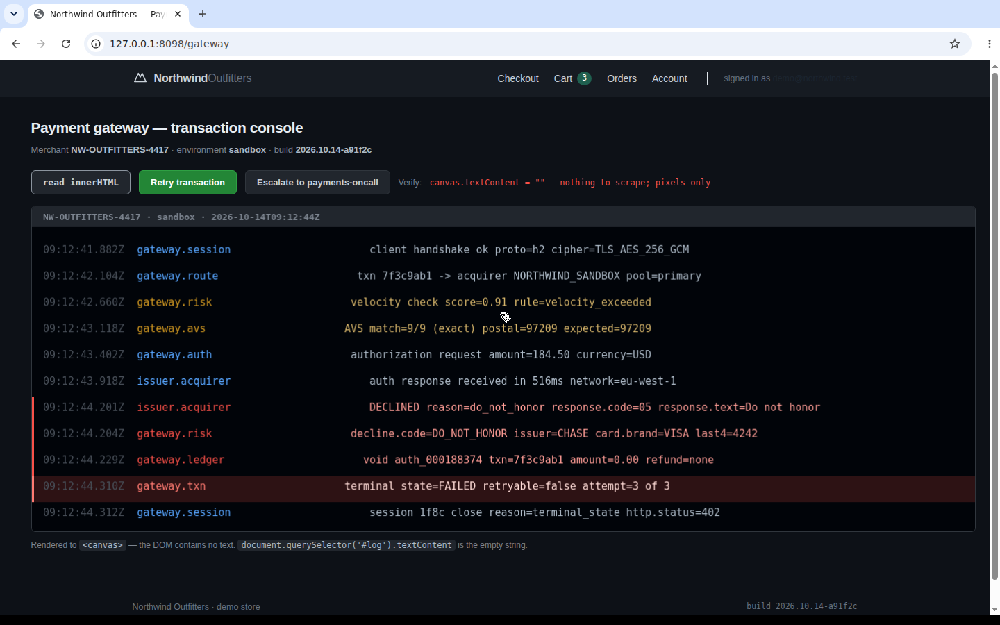
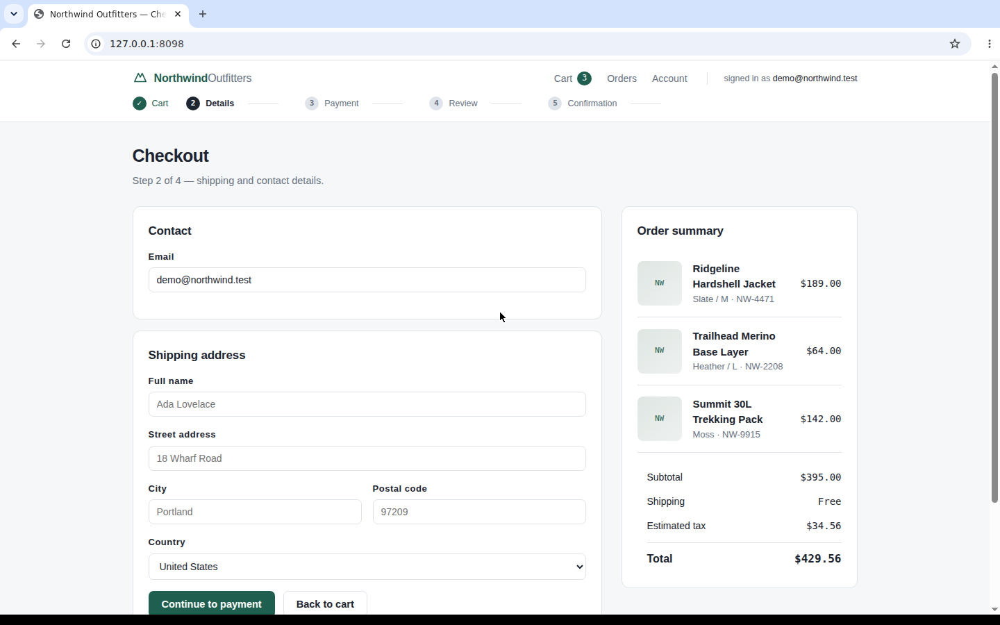
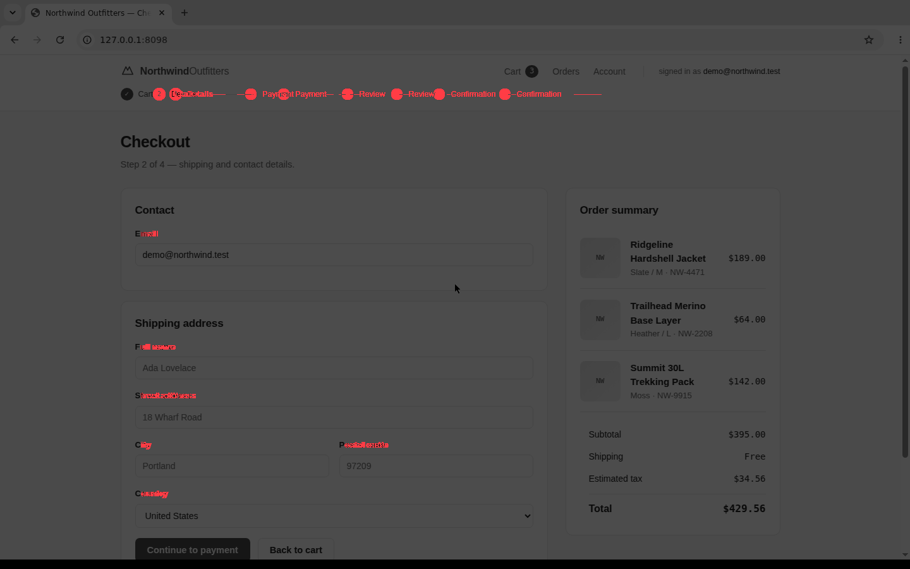
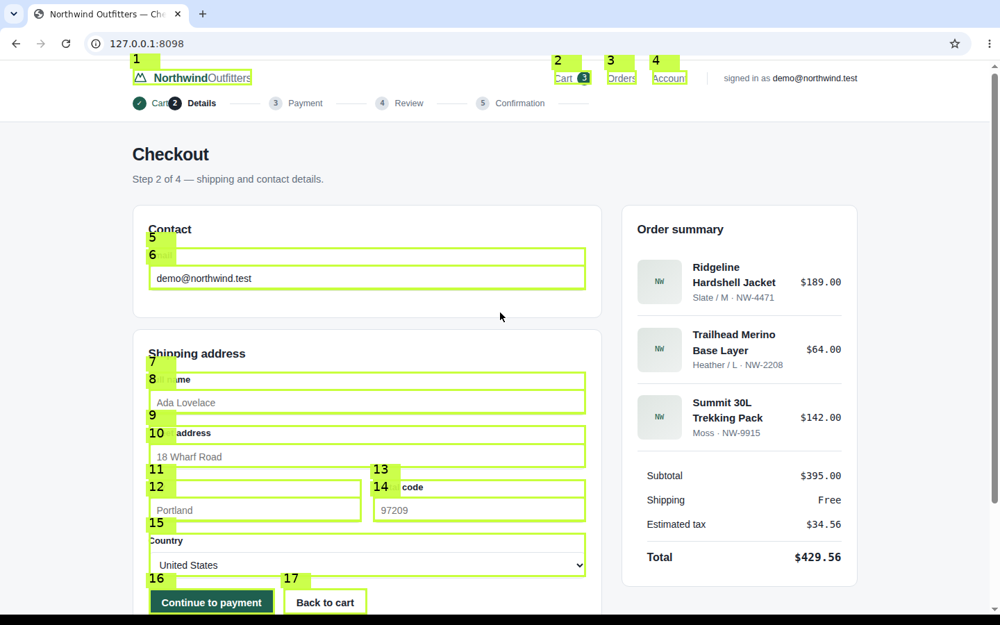
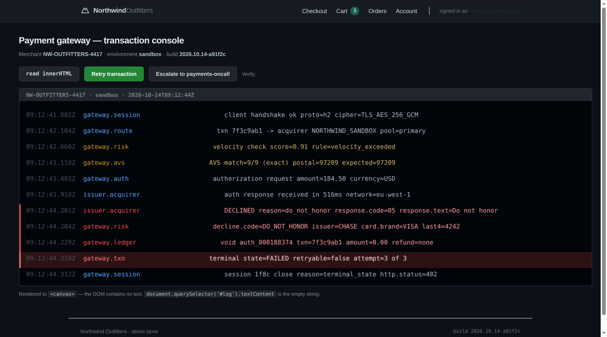

A headless-agent script drives a real Chromium through a real HTTP storefront — filling in a form, tripping a validator, getting declined twice, retrying, and completing the order. The whole thing is recorded three different ways. Every image, video, frame count and byte total on this page is a real artifact from a real run.
Two of those steps are failures the agent has to see in order to recover from — and the agent cannot see them, because it only reads the DOM. That is the entire argument for recording the screen.
The recording
Outcome
Three recordings of the same checkout. Tokens are the same {{meta.tokens_per_image|commas}}-per-image figure applied to every set, so the comparison is like-for-like.
Being straight about it: screenshots-only and Dynamo cost about the same in tokens ({{screenshots.tokens|commas}} vs {{dynamo.tokens|commas}}), because both sample on actions rather than on wall-clock time. Dynamo's advantage is not the token count — it is everything screenshots cannot produce at all: the video, the GIF, the click overlays, the timing manifest, and a recording that survives a crash.
Underlying metric
Each image set was decoded to a 64×64 RGB buffer and compared pixel-by-pixel with its predecessor. No similarity threshold is used: two samples of a still screen are bit-identical, so exact comparison is enough — and nothing here is a cutoff tuned to get the answer we wanted. Red frames below are exact duplicates of the frame before them.
Action-driven, so almost no waste — and still no video at all. A bug report from this workflow is a folder of PNGs with no way to see what happened between them.
{{diy.redundancy.duplicates}} of {{diy.redundancy.pairs}} consecutive pairs are bit-identical. Wall-clock sampling cannot know the agent was idle, so it keeps paying full price for a still screen: {{diy.tokens|commas}} tokens and {{diy.image_bytes|bytes}} of PNG to convey what {{diy.redundancy.distinct|commas}} distinct frames already said.
mean Δ {{dynamo.redundancy.mean_delta|f2}} vs {{diy.redundancy.mean_delta|f2}} — {{dynamo.tokens|commas}} tokens instead of {{diy.tokens|commas}}, because the reducer keeps the exact frame at every logged action plus the {{manifest.scene_frames_detected}} scene changes the detector found, and drops the rest. The spikes are real transitions: the card visual filling in, the step bar advancing, the decline banner appearing.
Artifacts
Both videos encode the identical checkout with libx264. Dynamo adds
+faststart so the browser can start playing before the file finishes downloading,
and burns the telemetry click-rings into the picture.
dynamo export{{dynamo.video_bytes|kb}}Pause the Dynamo video at the second card decline and look for the lime ring on
the Pay button — that ring is rendered from telemetry.jsonl, not drawn by the page.
The naive video has no way to show it. On this content the two GIF sizes are close
({{diy.gif_bytes|kb}} vs {{dynamo.gif_bytes|kb}} at identical framerate and resolution): the
two-pass palette earns its keep on flat and dark UI, and on bytes alone it is close to a wash
here.
Failure modes
The most common way a recording pipeline fails: the runner is torn down before
ffmpeg finishes, so the moov atom is never written and the payload is unusable.
Both columns are real output from the same checkout.
$ ffprobe diy_raw_9.mp4
{{diy.crash.raw_error}}
$ ffprobe dynamo_crash.mp4 duration={{crash.probe}} stream=h264 {{meta.width}}x{{meta.height}} # fully decodable
The left column is not hypothetical — it is the literal
stderr from a real run. A missing moov atom is not repairable for MP4;
there is no index to rebuild from. That is exactly why Dynamo sends SIGINT to
ffmpeg on every exit path, including when your agent's code raises.
// assets/telemetry_crash.jsonl {"timestamp": 0.68, "action": "type: full name", "x": 528, "y": 580} {"timestamp": 2.11, "action": "type: street address", "x": 528, "y": 657} {"timestamp": 5.86, "action": "click: continue to payment", "x": 304, "y": 865}
Every number
| Measure | A · Screenshots | B · DIY ffmpeg | C · Dynamo |
|---|---|---|---|
| Images handed to the modelwhat the VLM actually sees | {{screenshots.images|commas}} | {{diy.images|commas}} | {{dynamo.images|commas}} |
| Visual tokensimages × {{meta.tokens_per_image|commas}} | {{screenshots.tokens|commas}} | {{diy.tokens|commas}} | {{dynamo.tokens|commas}} |
| Distinct imagesunique by pixel content | {{screenshots.redundancy.distinct|commas}} | {{diy.redundancy.distinct|commas}} | {{dynamo.redundancy.distinct|commas}} |
| Bit-identical repeatspaid for twice | {{screenshots.redundancy.duplicates}} | {{diy.redundancy.duplicates}} / {{diy.redundancy.pairs}} | {{dynamo.redundancy.duplicates}} / {{dynamo.redundancy.pairs}} |
| Mean frame-to-frame Δ0–255, information density | {{screenshots.redundancy.mean_delta|f2}} | {{diy.redundancy.mean_delta|f2}} | {{dynamo.redundancy.mean_delta|f2}} |
| Max frame-to-frame Δlargest single change | {{screenshots.redundancy.max_delta|f2}} | {{diy.redundancy.max_delta|f2}} | {{dynamo.redundancy.max_delta|f2}} |
| Frame payloadbytes on disk | {{screenshots.image_bytes|bytes}} | {{diy.image_bytes|bytes}} | {{dynamo.image_bytes|bytes}} |
| Review videoattachable to a PR | none | {{diy.video_bytes|kb}} | {{dynamo.video_bytes|kb}} |
| Plays before download finishes+faststart | — | no | yes |
| PR-ready GIFsame 15 fps, same resolution | — | {{diy.gif_bytes|kb}} | {{dynamo.gif_bytes|kb}} |
| Click overlays in the videofrom telemetry | — | no | yes |
| Causalitywhich click caused what | unknown | unknown | manifest.json |
| Survives a torn-down CI jobagent crash or SIGKILL | — | no — moov atom not found | yes |
| Processes you must superviseX server, recorder, transcode, sampler | 1 | 4+ | 1 |
| Raw capture framesbefore reduction | 0 | {{diy.video_info.frames|commas}} | {{dynamo.video_info.frames|commas}} |
| Reduction vs. raw capturemanifest-reported | — | {{diy.redundancy.duplicate_pct|f1}}% dups removed | {{manifest.reduction_pct|pct}} |
Capability coverage
Not a score out of ten — just the list, with the measured result or the honest reason it is missing.
Owns the Xvfb lifecycle and blocks on a socket probe until X accepts connections. No DISPLAY export, no sleep, no flake.
DIY scripts race Xvfb startup. That race is why hand-rolled captures sometimes start against a half-built server.
Sends SIGINT to ffmpeg on every exit path, including when the agent raises, so the moov atom is always written.
A SIGKILL during capture leaves a container with no index. Verified against real ffprobe output.
Scene detection plus the exact frame at every logged action, deduplicated and downsampled. Action anchors are never dropped.
Sampling by wall-clock second pays full price for still screens. It cannot know the agent was idle.
Every kept frame carries its timestamp, the reason it was kept, and the action that caused it.
Replays the telemetry timeline and burns rings and crosshairs into the video at the logged coordinates.
Grab the framebuffer from inside the agent loop, in memory, without touching the recorder.
palettegen with stats_mode=diff, then bayer dithering at 128 colours. On this content the byte win is modest — the real gain is banding on flat UI.
No GPU anywhere in the pipeline. Framerate and CRF are the two knobs that decide whether a session fits a sandbox budget.
Playwright, Selenium, any GUI toolkit, any X11 client. Point DISPLAY at the harness and it is captured — browser chrome included.
Everything else an agent needs from a screen
Above covers recording, GIF export and the virtual display. Those get an agent a
replay. What they cannot do is tell it what error the page showed, which pixels moved,
or where the button is — and those are the questions an unattended agent actually asks. On a normal
page you can get them from the DOM. On a canvas, a VNC session or a HiDPI display you cannot, and no operating
system ships a headless tool for it. Each block below is a measured run against this same real storefront in
the same real browser: dynamo capture, ocr, diff and som.


The honest part: under flat per-image pricing a snip saves nothing — {{insp.capture.full.tokens_flat|commas}} tokens either way, because the model is billed per image and the crop is still one image. Sized pricing tells the other story: {{insp.capture.full.tokens_sized|commas}} → {{insp.capture.snip.tokens_sized|commas}} tokens. The crop's real win is not the price of this call — it is that a focused image is both cheaper to look at and measurably easier to read: confidence rose from {{insp.capture.full_confidence|f1}}% to {{insp.capture.banner_confidence|f1}}% because Tesseract's page analysis no longer has to decide which part of a 1440×900 frame is the text.

document.querySelector('#log').textContent{{insp.ocr.dom_text_of_canvas}}This is the case no OS covers. macOS Live Text and the Windows Snipping Tool
both exist, both are interactive overlays, and neither is reachable from a shell. The log above is painted to
a <canvas>, so a scraper finds the empty string — the probe on the page proves it. OCR reads
it locally for free in {{insp.ocr.elapsed_panel|f2}}s and hands back word boxes, which is what lets
you point back at the pixels you just read.
And it gets some things wrong, measurably. Against the page's own log, Tesseract returns:
truth {{insp.ocr.decline_line_truth}} ocr {{insp.ocr.decline_line_raw}} truth {{insp.ocr.terminal_line_truth}} ocr {{insp.ocr.terminal_line_raw}}
It reads O as 0, 1 as l, and a
monospace underscore as a space. A character whitelist does not fix it and neither does any page-segmentation
mode — both were tried. So Dynamo does not pretend the text is exact: it keeps the recognised characters
verbatim for the report, and folds
{{insp.ocr.score_panel.rescued_by_folding|count}} of the
{{insp.ocr.score_panel.expected|commas}} missed tokens back into matches at search time. An agent
asking "is DO_NOT_HONOR on this screen" gets a yes; an agent pasting a transaction id into a ticket gets the
characters that were actually there.

.steps li + li { margin-left: 26px },
.field label { letter-spacing: .04em },
.summary { padding: 18px 22px }
The red overlay is the deliverable. Changed pixels in red over a dimmed original
is the artefact a reviewer actually looks at, and it is also something a vision model can describe in one
sentence. The control matters as much as the finding: the same image compared against itself reports
{{insp.diff.control.changed_pixels}} changed pixels, so a non-zero result here is
signal rather than noise. A diff that flags everything gets switched off within a week, and then it catches
nothing — which is why --threshold and --min-changed-pct exist, and why both are
reported in the result rather than hidden behind the verdict.

Why the model answers with a number. Ask a vision model "continue to payment" and it returns a coordinate by pattern-matching a description onto an image. It is wrong often enough to be useless, and wrong confidently. Set-of-Marks draws the boxes instead, so the model replies with an index — and a wrong answer is a wrong index, which is checkable, rather than a wrong coordinate, which is not. The boxes came from a live DOM query and the pixels from the display; the only step between them is the transform the surface reports ({{insp.grounding.scale}} — here the browser's own chrome, not a scale factor, is what moves the page off the origin). Note the two rows above: the box is in image pixels, the resolved click is in pointer pixels, and they differ by exactly that origin. Reporting only one of them is how an agent ends up clicking {{insp.grounding.space_offset.1}} pixels too low.
One rule worth stating. Grounding refuses any box with no area, because an element clipped by the viewport reports a zero-height rect, cannot be clicked, and would still get a mark drawn on it — inviting the model to pick an index that resolves to a point outside the button. On this page, {{insp.grounding.clipped_at_top}} of {{insp.grounding.targets}} elements hit that case at the scroll position shown, and {{insp.grounding.skipped}} after scrolling the action row into view. The numbers are small here because this viewport happens to fit the form; on a shorter window they are not, and the check is the difference between a reported failure and a click that lands on empty page.

This is measured, not asserted. A real browser at
devicePixelRatio: 2 was opened, OCR read the button's label out of the resulting
{{insp.hidpi.image_size_2x.0}}×{{insp.hidpi.image_size_2x.1}} image, and the page was clicked twice. The
first click used that coordinate exactly as the agent saw it and missed by
{{insp.hidpi.drift_px.0}},{{insp.hidpi.drift_px.1}} pixels. The second normalised by the scale
factor and hit the button. On a Retina MacBook or a 4K Windows display every
screenshot-triggered action fails this way, and it fails quietly: the click lands on empty page
space, so the agent sees no error and reports success. That is why the conversion lives in one place —
Scale — and everything else in the harness asks it rather than guessing.
Note the two boxes above are not the same thing. OCR returns {{insp.hidpi.ocr_label_box_2x.2}}×{{insp.hidpi.ocr_label_box_2x.3}} — the glyphs. The button is {{insp.hidpi.dom_box_2x.2}}×{{insp.hidpi.dom_box_2x.3}}. Reading pixels finds text; it does not find the control's border. That is precisely why element boxes come from the DOM or CDP and the harness only draws them.
# one region, not the whole screen dynamo capture --region {{insp.capture.region.0}},{{insp.capture.region.1}},{{insp.capture.region.2}},{{insp.capture.region.3}} --out banner.png # is this error on screen, and where? exits 1 if not dynamo ocr banner.png --find DO_NOT_HONOR --fuzzy dynamo ocr $DISPLAY --find ECONNREFUSED # visual regression gate — exits 1 when the UI moved dynamo diff before.png after.png --out diff.png # {{insp.diff.full.verdict}}
from agent_visual_harness import compare, read_region, resolve, Scale # text off pixels, with boxes back in screen coordinates banner = h.read_region({{insp.ocr.panel_region.0}}, {{insp.ocr.panel_region.1}}, {{insp.ocr.panel_region.2}}, {{insp.ocr.panel_region.3}}) if banner.contains("DO_NOT_HONOR", fuzzy=True): # box_of returns (left, top, width, height) in screen pixels left, top, w, h = banner.box_of("DO_NOT_HONOR", fuzzy=True) h.click(left + w // 2, top + h // 2) # read it, then point at it # before vs after, with the changed regions d = compare(yesterday, h.take_screenshot()) if not d.same: d.save_diff("artifacts/diff.png") for region in d.regions: print(region.box, region.changed_pixels) # index -> coordinates, DPI-corrected marks = h.ground(boxes, scale=Scale(ratio=dpr)) click_x, click_y = resolve(marks, model_answer)
When a model is genuinely needed
The four blocks above are measured, not modelled — which is the point, and also their limit: a diff can tell you that the layout moved, but not what the decline message said. That last question needs a model, and it is where agents quietly become expensive, because the obvious implementation sends the whole screen, every frame, every time. A frontier model may well read an image better than a 4B one. That is not the question. The question is whether you can afford to ask it {{agent.meta.frames}} times a session, on frames that mostly changed nothing, at full resolution. Three levers decide that, and none of them is model quality:
| How the {{agent.meta.frames}} keyframes reach the model | frames sent | sent whole | visual tokens | of sending all |
|---|---|---|---|---|
| Workflow A — every keyframe, wholewhat a naive local agent does | {{agent.workflows.whole.model_calls}} | {{agent.workflows.whole.cropped}} | {{agent.workflows.whole.tokens_after|commas}} | {{agent.workflows.whole.token_ratio|frac}} |
| Workflow B — cropped to what the diff says movedthe crop, on its own | {{agent.workflows.cropped.model_calls}} | {{agent.workflows.cropped.cropped}} | {{agent.workflows.cropped.tokens_after|commas}} | {{agent.workflows.cropped.token_ratio|frac1}} |
| Workflow C — triagedskip unchanged · filter · crop | {{agent.workflows.triaged.model_calls}} | {{agent.workflows.triaged.cropped}} | {{agent.workflows.triaged.tokens_after|commas}} | {{agent.workflows.triaged.token_ratio|frac1}} |
The crop is not a resize. It is the region the diff reported as changed, cut out in ffmpeg before anything is encoded or sent — so the model is never asked to ignore the rest of the screen, it is simply never shown it. That distinction is what makes a 4B model viable on a CPU: {{agent.headline.crop_example.tokens_whole|commas}} tokens of screen becomes {{agent.headline.crop_example.tokens_crop|commas}} tokens of the thing that actually changed. On a payment decline that is the difference between paying for a 1440×900 screenshot and paying for the error banner.
from agent_visual_harness import Frame, OllamaBackend, LayaBackend, Triage # every frame, whole: the baseline this section is measured against whole = Triage(OllamaBackend("{{agent.meta.primary.model}}"), crop=False) # skip unchanged -> Laya scores -> crop -> the VLM answers triaged = Triage( OllamaBackend("{{agent.meta.primary.model}}"), # open weights, local filter=LayaBackend(), # typed, calibrated, no generation crop=True, ) report = triaged.run(frames, "what did the user see go wrong?") print(report.summary()) # includes what it declined to send
{{agent.workflows.triaged.summary}}
Where the open model actually wins, and where it does not. It does not
win on reading a hard image — a frontier model sees more. It wins on everything around the
reading. The weights are Apache-2.0, so the pipeline can be shipped and inspected rather than
rented; the frame never leaves the machine, which matters when the screen contains someone's card
details; the answer is deterministic at temperature 0, so a regression gate stays a gate; and
because the same run holds the telemetry, an answer here can be tied back to a click at a
timestamp — something no screenshot alone can do, however well it is read. {{agent.meta.frames}}
keyframes at {{agent.workflows.triaged.token_ratio|frac1}} of the whole-screen price is what buys
the budget to ask at all, and to escalate the two or three frames that genuinely need a bigger
model. Escalation is wired and off by default: RemoteBackend is only constructed if a
caller asks for it, and the report counts every frame that leaves.
The swap
# start the display and hope it came up Xvfb :99 -screen 0 {{meta.width}}x{{meta.height}}x24 & # immediately grab it. good luck. DISPLAY=:99 ffmpeg -f x11grab -i :99 out.mp4 & # ...run the agent... # CI reaps us here. no trailer, no index. kill -9 %2 # post-processing, if we got lucky ffmpeg -i out.mp4 -c:v libx264 -crf 28 naive.mp4 ffmpeg -i out.mp4 -vf fps=15 naive.gif ffmpeg -i out.mp4 -vf fps=1 frames/f_%03d.png
# the harness owns the display and waits for it dynamo record --display :99 --fps {{meta.fps}} \ -- python agent.py # compile artifacts; survives a crashed agent dynamo export ./dynamo-session \ --mp4 out/repro.mp4 --crf 23 \ --gif out/demo.gif --max-colors 128 --overlay-clicks dynamo keyframes ./dynamo-session --scene 0.05 \ --max-size 1280 --format webp --out out/frames/
from agent_visual_harness import VisualHarness with VisualHarness(display=":99", resolution=({{meta.width}}, {{meta.height}})) as h: h.run_on_display(["python", "agent.py"]) h.log_action("click", x=304, y=865, target="continue to payment") frame = h.take_screenshot() # PNG bytes, mid-run artifacts = h.export( video_path="out/repro.mp4", gif_path="out/demo.gif", vlm_keyframes_dir="out/frames/", ) print(f"Generated {len(artifacts.keyframes)} frames")
{
"source_size": {"width": {{meta.width}}, "height": {{meta.height}}},
"duration": {{dynamo.video_info.duration}},
"raw_frame_estimate": {{manifest.raw_frame_estimate}},
"scene_frames_detected": {{manifest.scene_frames_detected}},
"action_anchors": {{manifest.action_anchors}},
"keyframes_kept": {{manifest.keyframes_kept}},
"reduction_pct": {{manifest.reduction_pct}},
"keyframes": [
{"index": 1, "timestamp": 0.0, "reason": "action",
"action": "type: full name", "width": {{meta.width}}}}
]
}